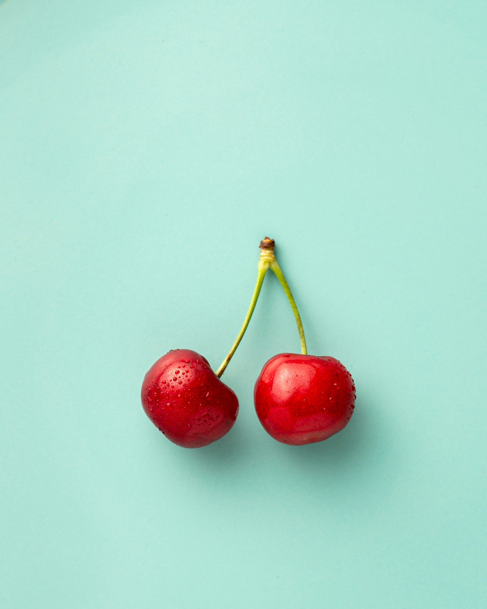
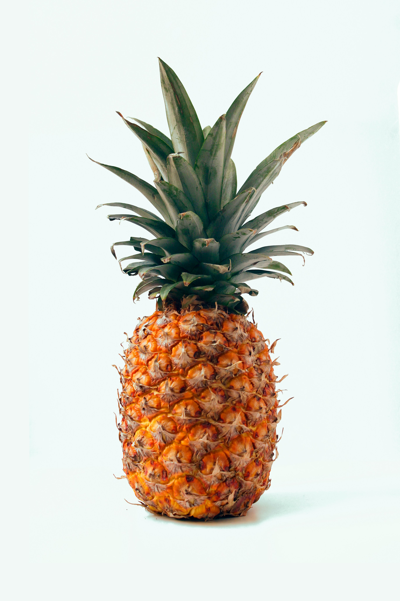
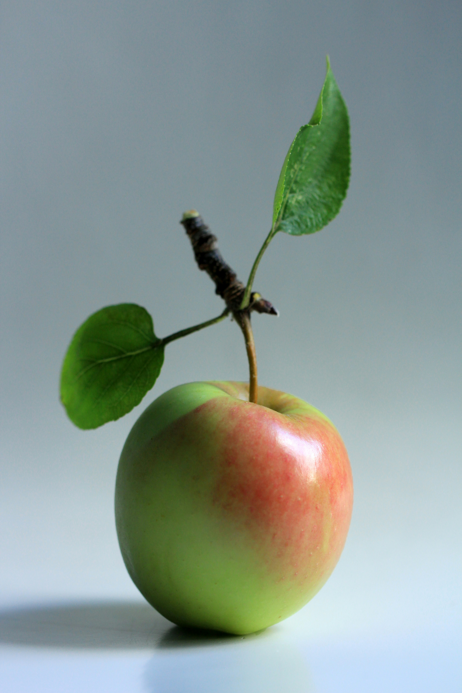
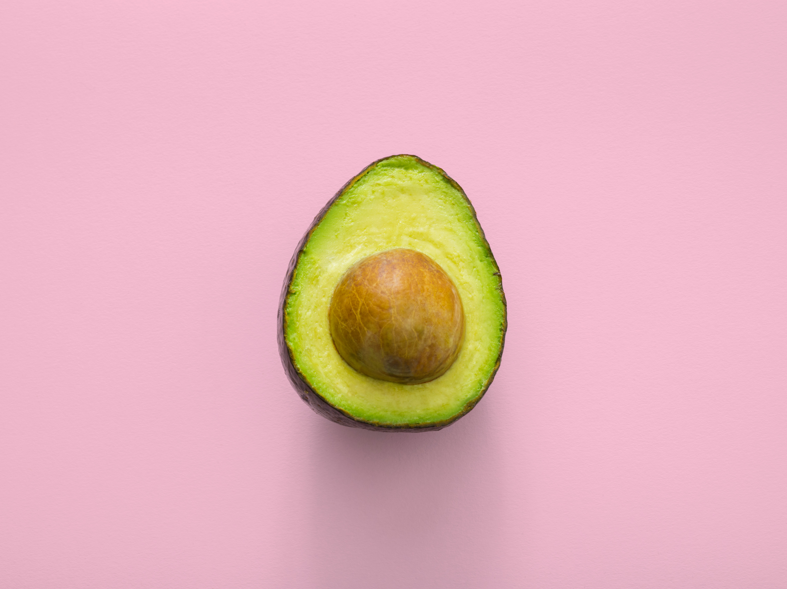
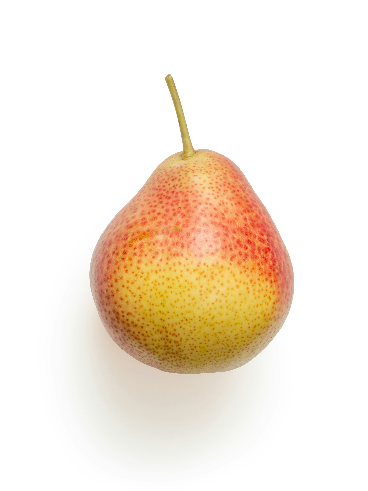

STAYWERRY
• Calories: 33 • Carbohydrates: 8g • Fiber: 2g • Sugar: 4.9g • Vitamin C: ~59.6mg (high in immunity-boosting antioxidants) • Potassium: 161mg
price =230/-

CHERRY
• Amount: Cherries provide roughly 1.0 to 1.6 grams of protein per 1 cup serving (about 138g–154g), or about 1.05 grams per 100 grams.
price =410/-

PINEAPPLE
• Calories: ~82 calories • Protein: ~0.89g to 1g (very low protein content) • Carbohydrates: 22g (including 16g of natural sugar and 2.3g of dietary fiber) • Fat: ~0.2g (fat-free)
price =130/-

APPLE
• Calories: ~95 kcal • Carbohydrates: 25.1 g (including 18.9 g of sugar and 4.37 g of fiber) • Fat, Protein & Sodium: 0.3 g fat, 0.47 g protein, and 0 g sodium or cholesterol • Vitamins & Minerals: Good source of vitamin C, potassium, and antioxidants such as
price =230/-
AVOCADO

• Vitamin K: ~35% of the daily value (supports bone health and blood clotting) • Folate (Vitamin B9): ~41% of the daily value (essential for cell growth and pregnancy health) • Pantothenic Acid (Vitamin B5): ~56% of the daily value (helps convert food into energy) • Pyridoxine (Vitamin B6): ~40% of the daily value (supports brain function and metabolism) • Vitamin E: ~28% of the daily value (acts as an antioxidant for skin and cell protection) • Vitamin C: ~22% of the daily value (boosts immune health) • Potassium: ~21% of the daily value (contains more potassium by weight than bananas,
price =430/-

NASHPATI
• Vitamin C: Supports immune health and collagen production (~4.3 mg to 8 mg per medium fruit, roughly 9% to 12% of the daily value). • Vitamin K: Aids in blood clotting and bone health (~7% to 10% of the daily value). • Vitamin B6 & B-complex: Supports nerve function and energy metabolism (includes small amounts of B2, B3, and B6). • Vitamin A / Provitamin A: Promotes healthy skin, vision, and tissue
price =150/-